I tested Google Maps lead scraper APIs on the same 20 searches for depth, cost, speed, and data quality. Here's which ones delivered.
lobstr.io is the best Google Maps Lead Scraper API I tested at scale. Across 20 New York and LA searches, it returned 2,567 unique listings with phones, hours, emails, and social profiles, vs. 1,739–2,523 for rivals.
No other API returned socials. It matched live Google Maps on every graded field and completed 10 searches in 45 seconds.
themineworks/maps-leads Actor): verified emails at $0.54/1K billed, but it silently cut 4 of my 20 searches short.Every raw request, response, and run log is in a public repo.
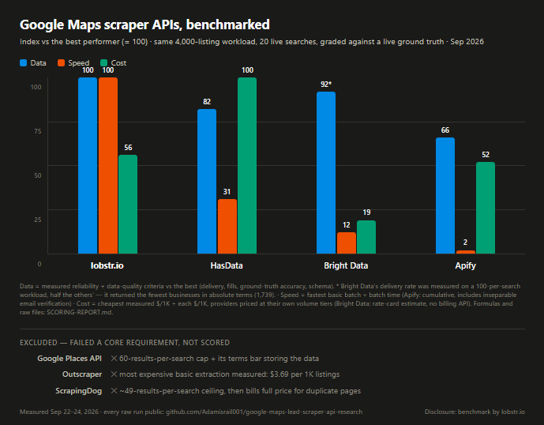
| Provider | Data verdict | Unique businesses | Basic $/1K listings | Emails | The catch |
|---|---|---|---|---|---|
| lobstr.io | Tier 1 | 2,567 | $0.50 scale / $2 entry | 45.3% found + 56.8% socials | Async: five API calls to your first listing |
| HasData | Tier 2 | 2,456 | $0.28 scale / $0.98 entry | 41.7% found | 73.7% delivery; job status never reaches finished |
| Bright Data | Tier 2 | 1,739 | ~$1.50 (rate card, unverified) | none | No billing visibility; keyword-only input |
Apify (themineworks/maps-leads) | Tier 3 | 2,523 | $0.54 billed | 28.3% DNS/MX-verified | Silently truncates low-email queries, reports SUCCEEDED |
| Google Places API | Not ranked | 1,044 | $2.30 | no email field | 60/search cap; terms bar storing results |
| Outscraper | Not ranked | 1,300 | $3.69 | not tested | Most expensive basic extraction in the test |
| ScrapingDog | Not ranked | 862 | $0.23 | none | ~49/search ceiling, then bills 100%-duplicate pages |
Seven tools tested, three not rankable, and a 3× price spread for the same rows. Why? It comes down to what people actually hire a Google Maps API to do.
Three jobs, in practice: lead generation (every marketing agency in Manhattan as a list your CRM can use, see also local lead generation), market research (competitor density, ratings, hours across an area), and scheduled data pipelines.
All three need the same thing: all the listings from a search, in a format you can keep. So, doesn't Google itself offer an API for this?
Yes. The Places API (New) is Google's official way to query business data, and its Text Search endpoint matches this use case.
It was also the best-engineered API in my test: 60 of 60 requests succeeded, 1.54s median latency, and the best opening-hours fill of any provider (97.9%).
Then come the four walls, all verified in my testing:
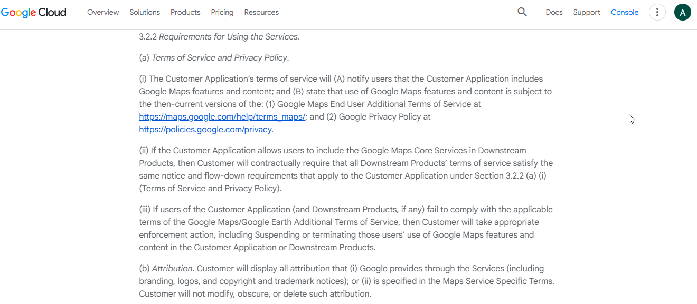
Places stays the right answer for the one thing its terms permit: real-time display inside your app.
Open DevTools on a Maps search and you'll see an internal search?tbm=map endpoint serving the data as you scroll. There's no documented API or reliable pagination around it.
And at any real volume, Google's anti-bot layer answers with /sorry/ block pages and reCAPTCHA. Getting past that means headless browsers, proxy rotation, and a parser that keeps up with Google's interface changes.
Congratulations, you're a proxy farmer now. 🧑🌾
If you still want to build it, we've covered scraping Google Maps with Python and no-code options.
There's also a broader roundup of the best Google Maps scrapers. This article benchmarks the API side.
I shortlisted candidates from Reddit, comparison articles, provider docs, Ahrefs data, and LLM recommendations, then verified each had a real, self-serve API.
Seven made the test: lobstr.io, HasData, Bright Data, Apify, Outscraper, ScrapingDog, and Google Places as the official baseline.
The workload: every API got the same 20 searches for marketing agencies and restaurants across 10 NYC/LA sub-areas, 200 listings requested per search.
One number shapes that design: a single Maps search stops serving results around 120–200 businesses. The ceiling is Google's, not the scrapers'.
Real coverage comes from slicing a city into sub-areas and deduplicating, which is exactly what this workload does.
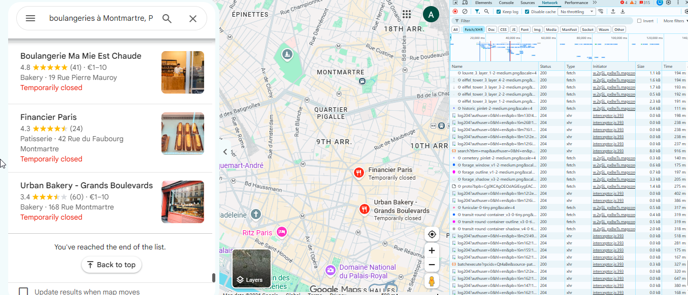
The ranking model, in order:
Ground truth: I graded 24 businesses against live Google Maps across 8 fields (name, address, phone, website, category, rating, review count, hours).
Records were joined across providers by Google CID, so everyone was graded on identical businesses: 180 checks (157 for Apify, which has no review-count field).
Speed fairness: lobstr.io's first run spent 28 minutes crawling websites for emails, so I reran the identical workload with enrichment off for lobstr.io and HasData.
Pricing is compared scale-tier to scale-tier, with entry prices alongside.
Disclosure: lobstr.io runs this blog and is a contestant. Which is exactly why the formulas, raw files, and fairness re-runs are public. If you distrust a number, re-derive it.
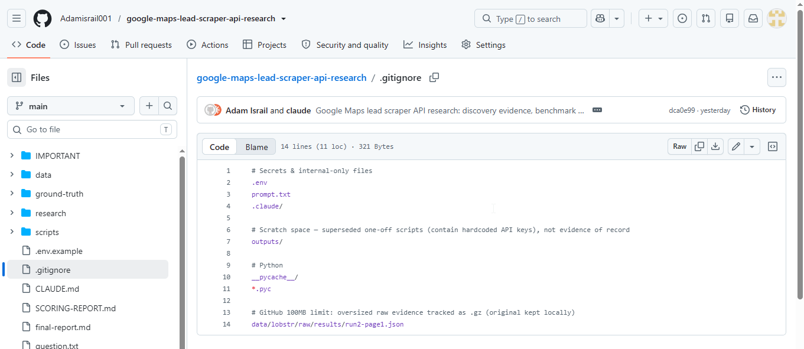
Here's where everyone landed.
| Rank | Provider | Delivery vs requested | Core-field fill | Ground-truth accuracy | Basic batch time | Silent truncation |
|---|---|---|---|---|---|---|
| 1 | lobstr.io | 85.1% | 97.1% | 100% (180/180) | 45.3s | Zero found |
| 2 | HasData | 73.7% | 94.2% | 98.9% (178/180) | 146.6s | None found |
| 3 | Bright Data | 87.1%¹ | 96.4% | 98.3% (177/180) | 365s | None found |
| 4 | Apify | 68.3% ⚠ | 92.8% | 98.7% (155/157) | 2,195s* | 4 of 20 queries cut |
* Apify's email verification can't be switched off; its timing includes that work. ¹ Measured against a 100-per-search request, half of everyone else's; not directly comparable.
No provider can hit 100% delivery, because Maps is a ranked feed, not a database export, and some areas simply hold fewer matches. Staten Island doesn't owe anyone 200 marketing agencies.
What separates the four is whose fault the shortfall is: Google running out of listings (lobstr.io, HasData, Bright Data) or the tool cutting your search short (Apify).
Raw listings are only half the story though. If you're doing outreach, the other half is contacts.
Google Maps provides no email or social profiles; providers that return them crawl each business's website as an extra step. On the same 20 searches:
| lobstr.io | HasData | Bright Data | Apify | |
|---|---|---|---|---|
| Emails found | 45.3% | 41.7% | — | 28.3% |
| Email verification | Mailbox-level, optional (measured live, below) | not offered | — | DNS/MX check, always on |
| Social profiles | 56.8% (FB, IG, LinkedIn, X, TikTok, YouTube, Pinterest, WhatsApp) | — | — | — |
| Lead filters | email / website / phone / owner-claimed / open-closed / rating ranges | — | — | — |
Two things to read carefully in that table.
First, Apify's DNS/MX check confirms the domain accepts mail, not that the mailbox exists. lobstr.io's auto_verify_emails (2 credits per checked address, confirmed-invalid free) validates the mailbox itself.
I measured it live on one search after the main benchmark (Manhattan agencies, 2026-09-29): 175 businesses, 185 found emails, verified as 139 valid, 39 invalid, 7 unknown. One in five extraction-only emails would have bounced.
The whole batch billed 735 credits: $0.37 at the Team rate, about $2.64 per 1K verified-valid emails (raw run: data/lobstr/raw/verification-run/ in the repo).
Second, the filters matter as much as the emails: only-with-email, businesses-without-a-website (the ideal prospect list for web designers), owner-claimed only, open only, rating ranges.
A full lead record (listing + details + email + verification) is 5 credits, and usually less, since rows with no email skip the email and verification charges entirely. More on the workflow in our Google Maps email extractor guide.
Now the deep dives: the top three, then the rest in brief.
User rating: 5/5 (Capterra, 33 reviews, as of August 13, 2026)
API type: Async (Squid → Task → Run → Results)
Best for: complete listing extraction at scale, with real contact enrichment when you want it
| Pros | Cons |
|---|---|
| 100% ground-truth accuracy, the only perfect data-quality score in the test | Fully-enriched cost ($1.75/1K at scale) is ~3× Apify's billed figure |
| Fastest basic batch measured: 45.3s for 10 searches at concurrency 20 | Async only: five API calls before you see a listing |
| 85.1% delivery with zero silent truncation; 87+ fields, consistent across 2,567 records | Coordinate-anchored task URLs take a few minutes to grasp |
| The only real enrichment tested: 45.3% emails + 56.8% socials, plus lead filters | |
| Scheduling, exports, Google Sheets, S3, n8n, Make, webhooks, MCP |
lobstr.io is a no-code cloud scraping platform with 50+ ready-made scrapers behind one REST API. The one this article is about is the Google Maps Leads Scraper.
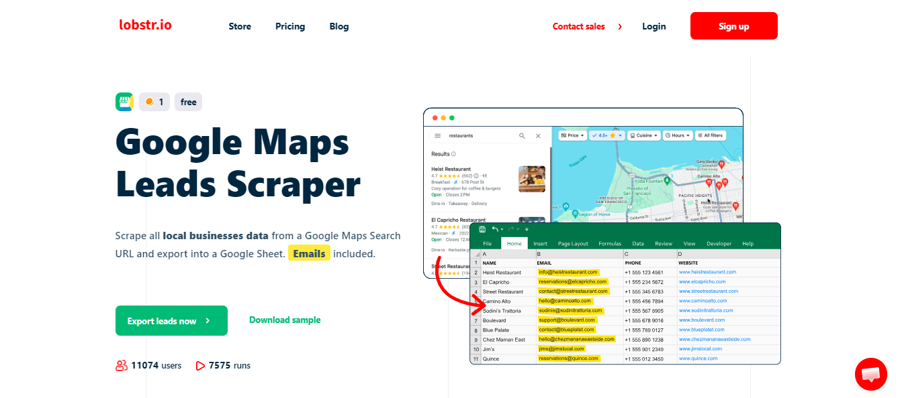
Monthly plans: Free (100 credits), Starter $20 (10K), Pro $100 (100K), Team $500 (1M).
Credits are billed per function, and I measured the math live: 1 credit per unique business (my basic run billed exactly 926 credits for 926 unique businesses, no rounding games). Email extraction is charged only when an email is found; verification is 2 credits per checked address, confirmed-invalid free.
One sizing note: the 45-second batch below ran 20 concurrent slots, which needs a plan that includes them (Team has 50, Starter 2). Full grid on the pricing page.
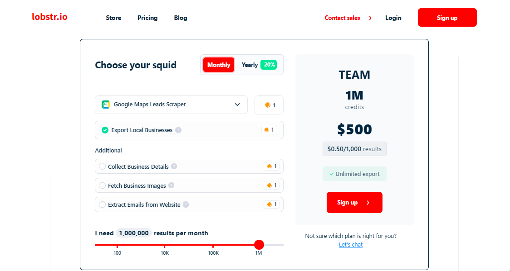
functions block is the cost dial: each enrichment adds its own credit, everything off is 1 credit per listing.One (trimmed) listing from a live run:
{
"name": "Jives Media",
"category": "Marketing agency, Internet marketing service",
"address": "800 6th Ave Ste 36C, New York, NY 10001",
"phone": "+19292655595",
"website": "https://www.jivesmedia.com/digital-marketing-agency-in-manhattan-ny/",
"score": "4.9", "ratings": "199",
"place_id": "ChIJr-cZk4ZZwokRu-ftpVM5lVQ", "cid": "6094840702144735163",
"is_verified": "true",
"email": "info@jivesmedia.com",
"facebook": "https://www.facebook.com/jivesmedia",
"instagram": "https://www.instagram.com/jivesmedia",
"linkedin": "https://www.linkedin.com/company/jivesmedia"
}The full record carries 87 fields: identifiers, owner info, popular times, review distributions, plus the per-network social links no rival returned.
Quality, measured: 100% ground-truth accuracy (all 180 graded points matched the live listing, the only perfect score in the test), 100% freshness, and 97.1% core-field fill across all 2,567 businesses. Best of the ranked four.
| Run | Config | Listings | Wall-clock |
|---|---|---|---|
| Run 1 | 10 searches × 200, enrichment ON | 1,594 | 28 min 31 s |
| Run 2 | identical searches, enrichment OFF | 1,536 | 45.3 s |
~97% of Run 1's clock was enrichment: thousands of website visits hunting for emails. With enrichment off, lobstr.io was the fastest scraper in the test by a factor of 3.
Never compare scraper speeds without checking what work each run did per row.
Async model: Squid (your configured scraper) → Tasks (Google Maps search URLs) → Run → Results.
Auth is a static Authorization: Token header from your dashboard, no OAuth; every step is a plain curl, documented at docs.lobstr.io. The clever part is how tasks target an area:
curl -X POST "https://api.lobstr.io/v1/tasks" \
-H "Authorization: Token $LOBSTR_API_KEY" -H "Content-Type: application/json" \
-d '{ "squid": "{squid_id}", "tasks": [
{ "url": "https://www.google.com/maps/search/restaurants/@40.7831,-73.9712,14z" },
{ "url": "https://www.google.com/maps/search/restaurants/@40.6782,-73.9442,14z" } ] }'That @lat,lng,14z suffix anchors each search to a map viewport instead of a fuzzy place name. It's how you slice a city into sub-areas cleanly.
Three measured behaviors worth knowing: max_results above 200 is rejected with a clean 400 AttributeLimitExceeded (Google's ceiling surfaced, not silently absorbed). Free geo_match/category_match flags drop out-of-area and wrong-category rows. And on the results endpoint the documented limit parameter is ignored; the working one is page_size (up to 1,000).
Webhooks replace polling, and from there it's no-code automation: scheduling, Google Sheets, S3, n8n, Make, or MCP.
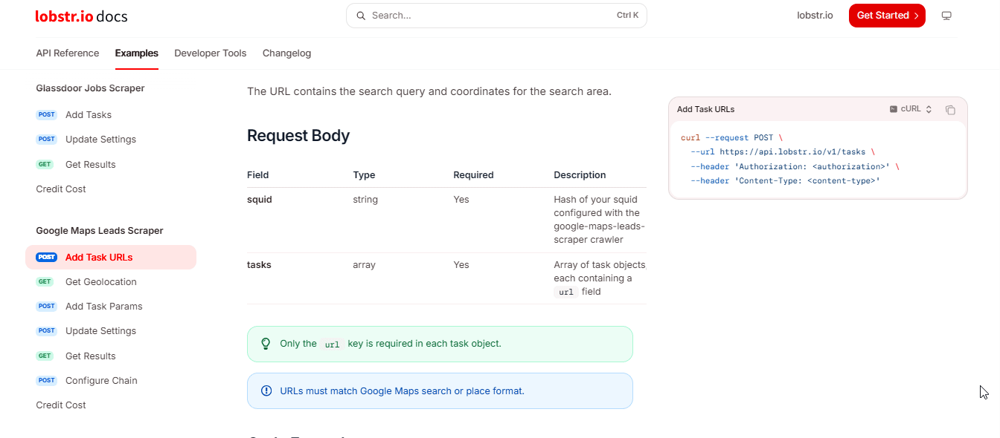
The pick when completeness is the requirement. Most listings, best fills, a perfect accuracy score, the fastest like-for-like batch, and no undisclosed billing or truncation behavior in three days of testing.
At scale pricing it's also cheaper per listing than everything except HasData's volume tier. Extract every Google Maps listing from any search →
API type: Async jobs (submit → poll → results, + webhooks)
Best for: bulk listings on a budget
| Pros | Cons |
|---|---|
| $0.98/1K measured at entry, $0.28/1K at its $208 volume tier | 73.7% delivery: a quarter of requested listings didn't arrive |
| 146.6s basic batch, 2nd fastest; transparent billing at exactly 3 credits/row | Schema wobbles between runs (rating/reviews filled 73% in run 1, 100% in run 2; measured, unexplained) |
41.7% email fill as an optional flag (extractEmails: true) | Job status never reaches finished; you must watch the results endpoint instead |
| Clean REST + webhooks; 422 errors that self-document the schema | No socials, no images (separate paid enrichments, untested); 5 concurrent jobs at entry |
HasData is a scraping-API platform. Its Google Maps scraper runs as async jobs: you submit keywords + locations, it scrapes on its infrastructure, you download the rows.
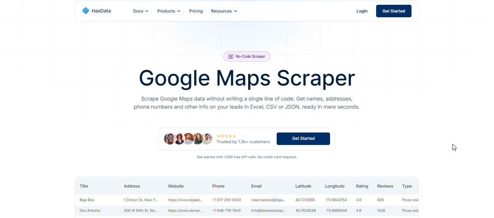
Credit subscription; I tested on Startup ($49/month, 200K credits). Billing was the most predictable of the test: exactly 3 credits per row, every job, verifiable per job.
A test email job even billed below the documented rate (158 credits where naive math said 200). A billing bug in the customer's favor. I checked twice. 😄
extractEmails: true (buys the 41.7% email fill)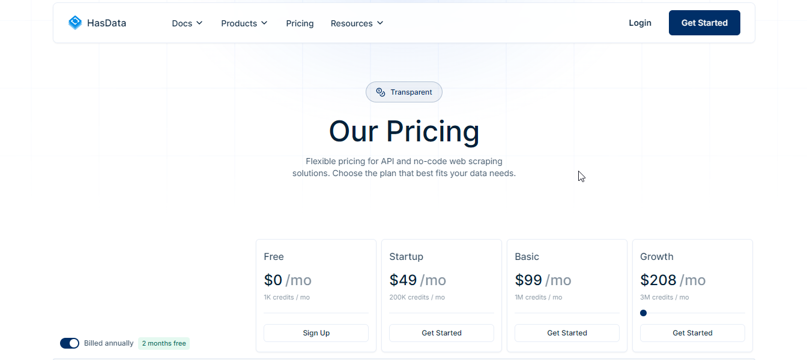
A solid, lean record of 29 fields: identifiers, coordinates, hours, rating, plus an emails array in email mode. What it lacks vs lobstr.io: social profiles, images, and owner fields.
Quality, measured: 98.9% ground-truth accuracy (178/180), 100% freshness, and 94.2% core-field fill.
One caveat: it wobbles. My agencies run filled rating/reviews on 73% of rows; the restaurants run, same config, filled 100%. Neither job's status hinted at the difference.
146.6s for the basic 10-search batch, second fastest. With extractEmails: true the same batch took 7 min 11 s.
Same lesson as lobstr.io: email extraction is website-crawling work, and it triples the clock.
Model: job → poll → paginated results, with an x-api-key header, documented at docs.hasdata.com. Two measured gotchas and one nicety.
On the entry plan only 5 jobs run concurrently: a 10-search batch gets HTTP 429 on the 6th, and a 30-second retry loop handles it.
The bigger one cost me an hour: job status never reaches finished, parking at exporting_data indefinitely ⏳ even when every row is ready. The reliable done-signal is the results endpoint itself (when meta.total equals the job's dataRowsCount and stays stable across two polls), or webhooks, which sidestep the whole thing.
The nicety: send a malformed body and the 422 response tells you the exact schema you should have sent. The API documents itself through its errors.
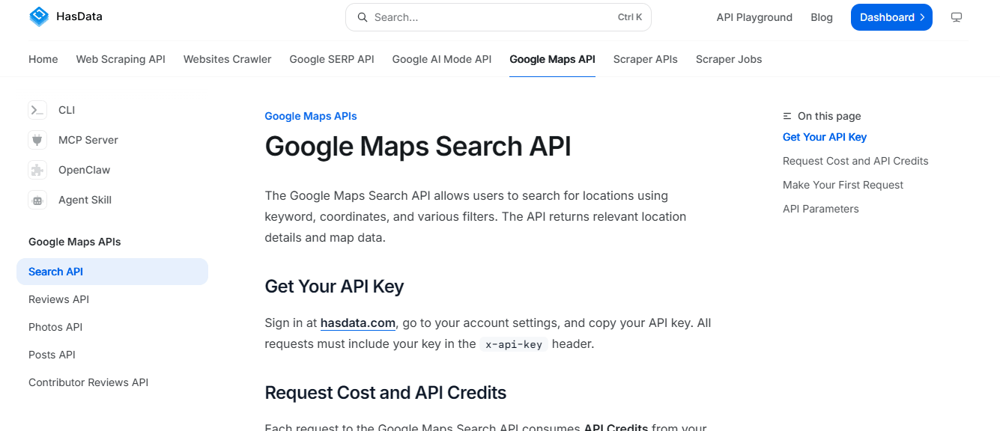
If budget leads the decision, HasData is the answer: 94.2% core fills and 98.9% accuracy at the lowest verifiable price in the test.
Build the pipeline around counting rows rather than trusting statuses, expect ~74% of what you asked for, and it quietly does its job. Next: an executor that does everything well except tell you the price.
API type: Async (trigger → progress → snapshot, + webhooks)
Best for: teams already on Bright Data's data infrastructure
| Pros | Cons |
|---|---|
| 87.1% delivery, best success rate among the finalists | No billing visibility via API at all; my test's cost is a rate-card guess |
| 96.4% core fills, 0.2% error rows, consistent 39-field schema | Inputs are country + keyword only; no coordinates, no URL input |
| Richest listing-side detail: review distributions, popular times, Q&A | progress: ready doesn't mean downloadable (can still return building; retry ~30s) |
| Clean trigger/progress/snapshot flow + webhook delivery | No emails, no socials; bare listings only |
Bright Data is enterprise data-collection infrastructure. For Google Maps you use its Web Scraper API against a pre-built dataset (gd_m8ebnr0q2qlklc02fz, "Google Maps full information") in discovery mode.
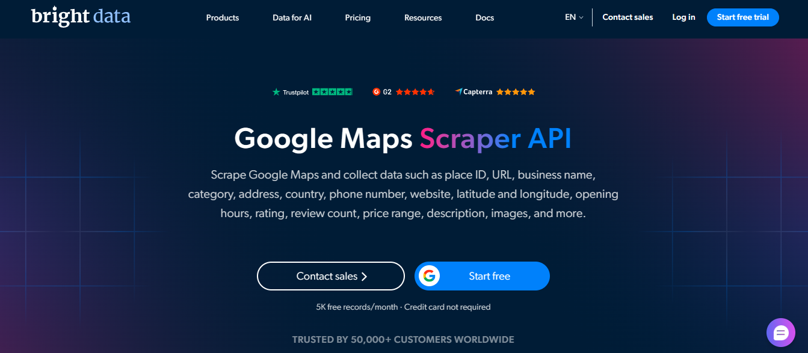
Third-party sources quote $0.75–$1.50 per 1K records. Bright Data's own API exposes no billing field, no credits counter, no spend endpoint.
I ran 2,000 requested records through it and still can't tell you what they cost. 🤷 My ~$1.50/1K figure is the rate card's upper bound, flagged as unverified in every table it appears in.
Every other finalist let me reconcile the bill to the row. "You'll know what you spent when the invoice arrives" is a strange flex for a data company.
A consistent 39-field record: listing basics plus review distributions, review snippets, top reviews, popular times, and Q&A. The richest review-side detail of the finalists.
What it structurally lacks: any contact data. I checked the union of all keys across all 1,741 records: zero email or social keys anywhere. For a lead list, it hands you a phone number and wishes you luck. 📞
Quality, measured: 98.3% ground-truth accuracy (177/180), 100% freshness, 96.4% core fills, 3 marked error rows in 1,741, no silent gaps.
Around 6 minutes per 10-search batch (365s and 340s across two runs). Respectable, until the like-for-like twins ran.
On the same bare-listings work, lobstr.io finished in 45 seconds and HasData in 2.5 minutes. Bright Data's ~6 minutes is a basic timing with no enrichment excuse attached.
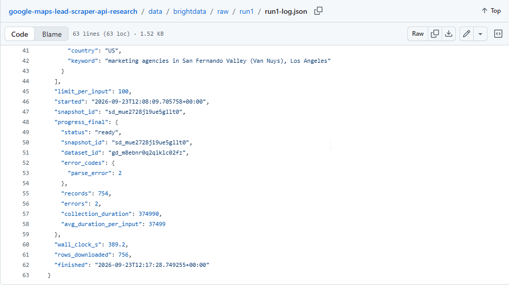
collection_duration and the two parse_error rows.Model: trigger → progress → snapshot, Bearer token, documented at docs.brightdata.com.
The input shape is the real constraint: country + keyword is all you get, so your geographic precision lives or dies on how well the keyword string parses.
Two frictions measured: progress: ready doesn't mean downloadable (my first snapshot request after ready returned {"status":"building"}; retry ~30s later and the data arrives). And the docs were unreachable from my test network, with the first API key arriving blocked.
Webhook delivery is available, so you can skip polling entirely.
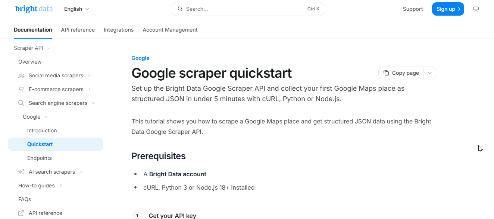
The best pure execution among the runners-up: near-perfect fills, honest delivery, rock-solid schema, held back by opacity and friction rather than data quality.
If your org already runs on Bright Data, the Maps dataset won't disappoint. If you're choosing fresh, you can get better numbers, faster, with a visible bill elsewhere.
All three went through the same tests as the ranked providers. Here's the short version of each, with the evidence.
themineworks/maps-leads Actor: verified emails, silent cutoffsApify is an Actor marketplace; this Actor scrapes Maps and verifies emails inline (DNS/MX checks, same run).
Its billing is genuinely honest: records without a verified email carry "charged": false and cost nothing, which I reconciled per-record against the billing API. My two full runs billed $1.3656 for 2,523 unique listings: $0.54/1K, the cheapest figure in the test that comes straight from a billing API. 28.3% of records carried a DNS/MX-verified email.
Now the part you won't find on its store page. During my Van Nuys query, the run stopped at 20 of 200 results. The run status said SUCCEEDED. Only the raw log told the truth:
[profit-guard] spend ~$X exceeds revenue ~$Y + $0.02 allowance — stopping (run would lose money)The Actor has two undocumented economic circuit-breakers: a $0.25-per-run spend ceiling and a real-time profitability check. When a query doesn't yield enough billable verified emails, it stops collecting your listings to protect its margin, then reports success.
It cut 4 of my 20 queries this way. It's the only API I've tested whose definition of "SUCCEEDED" includes "decided your data wasn't worth finishing". 💸
The listing data around the excellent email block is also the weakest of the test: business_status broken on all 2,523 records, no review count, hours usually a single day.
If verified emails are the deliverable, it's the cheapest way to get them. But wrap every run in a two-line check: grep the log for profit-guard and compare places found against what you requested.
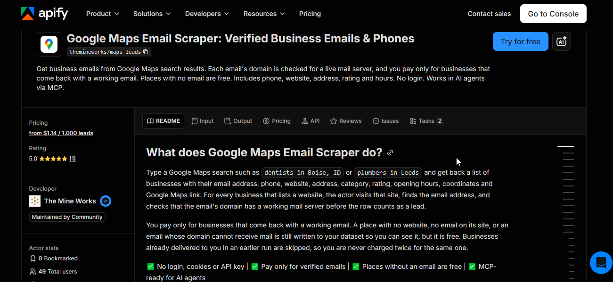
The only exclusion on price. Its base scrape cost $4.80 for 1,300 unique businesses: $3.69/1K with zero enrichment, 2 to 7× the ranked providers, with email stages priced on top.
The data itself was strong (97.5% core fills, the best of any tool tested, on a budget-capped 80-per-search run). It sells the same groceries as everyone else at steakhouse prices. 🥩 If price is no object, it's a fine product.
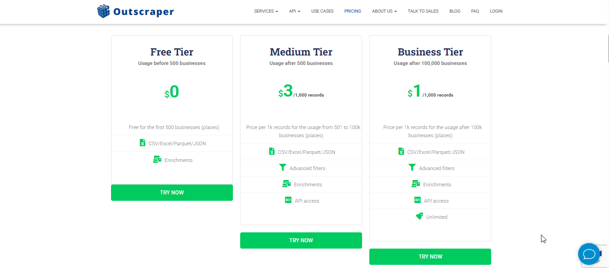
A hard depth ceiling around 49 unique results per search, below even Places' 60. Past the ceiling the meter keeps running: fully-billed HTTP 200 pages of 100% duplicates, with no end-of-results signal.
22% of my spend bought photocopies of pages I already had. 📠 Within its window it was superb ($0.23/1K, ~1s responses). For "all the listings", it structurally can't.
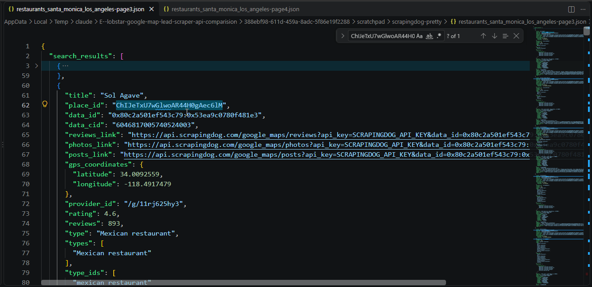
place_id recurring across fully-billed pages.Fill rates aren't the whole data story. A tool that returns out-of-area or wrong-category rows delivers worse data even when its fills look fine. What I verified:
| lobstr.io | HasData | Bright Data | Apify | |
|---|---|---|---|---|
| Dedupe across searches | ✓ built-in (unique-results billing) | you dedupe by placeId | you dedupe | ✓ per docs (untested) |
| Geo / category filters | ✓ both, free | category presets per docs; no geo filter | ✗ | ✗ per Actor docs |
| Input: coordinates / Maps URL | ✓ (tested) | ✗ keyword + location | ✗ country + keyword only | ✗ free-text query |
| Fields per listing | 87 | 29 | 39 | 35, mostly email metadata |
| Reviews | chainable to the Reviews Scraper | review count only | distributions + top reviews in-record | ✗ |
| Images / details | ✓ (up to 250 images) | paid add-on, untested | popular times, Q&A | ✗ |
| Lead filters | ✓ email/website/phone/claimed | not tested | ✗ | ✗ per Actor docs |
"Per docs" = from provider documentation, checked 2026-09-29, not run live; "not tested" = neither.
themineworks/maps-leads): when DNS/MX-verified emails are the deliverable and you wrap every run in the truncation check.Still weighing it? These are the questions that come up every time.
Because Google Maps does. Any single search view exhausts around that depth no matter who's scraping.
Real coverage comes from slicing a city into sub-areas (district searches at zoom 14z worked cleanly in my tests) and deduplicating by place_id or CID.
There's no universal yes or no. Google's terms prohibit scraping its services, the data itself is public business information, and legality depends on your jurisdiction and what you do with the data.
This test measured what's technically possible, not what's permitted in your case. Is scraping Google Maps legal? covers the case law. Not legal advice.
Not from Google Maps. No email or social profile appears on a listing. Providers that return them crawl each business's website as an enrichment step with separate cost.
Any "Maps scraper" advertising emails without mentioning website crawling deserves a raised eyebrow. 🤨
At measured basic rates: HasData ~$28 at its volume tier, lobstr.io ~$50 at Team, Apify ~$54 billed (with the truncation risk), Bright Data ~$150 by rate card, Outscraper ~$369.
Google Places: ~$230 in request fees for a list its terms don't let you keep.
Yes, that's the point. Every raw request, response, run log, credit snapshot, the 24-business ground truth, and the scoring scripts are in the public repo.
SCORING-REPORT.md documents every formula; scripts/compute_final_scorecard.py recomputes the scorecard from the raw files.
I tested 7 Google Maps scraper APIs on the same 4,000-listing workload, graded them against a live ground truth, and re-timed the top contenders with enrichment off so nobody's extra work skewed the clock.
lobstr.io is my recommendation: the most complete results, the only perfect accuracy score, the fastest fair batch time, and the only real contact enrichment, at $0.50/1K basic on its scale plan.
HasData is the budget alternative if ~74% delivery fits your pipeline. Everything below them comes with a caveat you now know by name.
Want to check the completeness claim yourself? Try the Google Maps Leads Scraper.
Next, I'm pointing this same harness at Google Maps reviews. If you want the raw files when that lands, find me on LinkedIn.